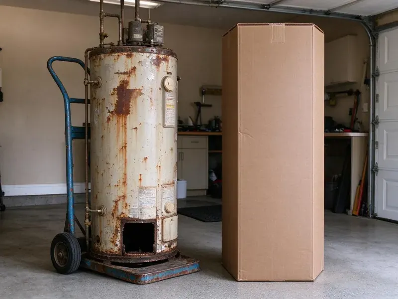

Plumbing Replacement in Teays Valley, WV
GJK Plumbing handles plumbing replacement in Teays Valley, WV, from worn-out water heaters and softeners to failing sewer lines and whole-home repipes.
- Same-Day Water Heater Replacements
- Clear Pricing
- Skilled, Certified Plumbers
- Fast, Expert Technicians
Need a Plumbing Replacement in Teays Valley, WV?
Do not let old or broken plumbing upend your life, contact us for a free estimate today.
Professional Plumbing Replacement Services in Teays Valley, WV
At GJK Plumbing, we understand that a plumbing replacement can be a significant investment for homeowners in Teays Valley, WV. We use high-quality materials and proven techniques so every replacement, from a simple faucet to an entire home repipe, meets high standards for durability and performance.
Our expertise includes:
- Water line, sewer line and whole-home pipe replacements
- Advanced Pipe Replacement Techniques
- Sewer, water and gas line replacements

Additional Plumbing Replacement Services in Teays Valley, WV
When repairs are no longer enough, our replacement services in Teays Valley, WV deliver durable upgrades that restore full performance.


Customers
Why Choose GJK Plumbing for Plumbing Replacement in Teays Valley, WV?
Our plumbers install equipment and pipe to current code, which often means adding expansion tanks, pans or upgraded venting. These updates protect your home and help with future inspections.
- Clean Removal, We haul away old heaters, pumps and pipe at no extra hassle to you.
- Local Expertise, We understand the plumbing challenges posed by West Virginia soil conditions and climate, ensuring tailored solutions.
- Quality Materials, We use only reputable, long-lasting plumbing components from trusted brands like Rheem, AO Smith and Moen.
Citywide Coverage
We provide plumbing replacement across Teays Valley, from older homes with galvanized pipe to newer homes with first-generation water heaters reaching the end of their life. Our trucks carry frequently needed equipment and parts.
Experienced Team
Each technician at GJK Plumbing is committed to upholding our high standards of craftsmanship and customer service for plumbing replacements in Teays Valley. Their expertise means every job is completed correctly and efficiently the first time.
Safety-First Approach
Safety is our top priority during every plumbing replacement project. We follow all local safety regulations and plumbing codes in Teays Valley, WV to safeguard your home and our team.
Trusted Certified Teays Valley Plumbing Services Professionals
At GJK Plumbing, we take pride in providing licensed, certified plumbing services throughout Teays Valley, WV. Backed by recognized industry credentials, our experienced plumbers combine technical skill with genuine customer care. Whether it is repair, installation, or maintenance, we follow strict safety and quality standards to deliver long-lasting results you can trust.
Call Us Now PHCC Plumbing Contractor Recognition
PHCC Plumbing Contractor Recognition Better Business Bureau (BBB) Accreditation
Better Business Bureau (BBB) Accreditation Angi Certified Pro
Angi Certified Pro ISO 9001 Quality Management Certification
ISO 9001 Quality Management CertificationTrusted Plumbing Replacement Services in Teays Valley, WV
Water Softener Replacement in Teays Valley, WV
Hard water leads to mineral buildup in pipes and appliances. Testing well water every year or so is a smart habit in West Virginia, especially after flooding or nearby ground disturbance. If your old water softener is no longer properly removing minerals, or if it is over 15 years old, a replacement will protect your plumbing and improve water quality. We replace all types of water softeners, including salt-based and salt-free systems, sized for your household's water usage and installed correctly on your main water line to provide consistently soft water throughout your Teays Valley home.

Well Pump & Pressure Tank Replacement in Teays Valley
For rural properties in and around Teays Valley that rely on well water, a failing well pump or pressure tank can leave you with no water at all. We diagnose issues with your current well system and provide professional replacement for submersible or jet pumps. We also replace faulty pressure tanks, so your well system maintains consistent water pressure and your pump lasts longer. Proper sizing and installation are essential for efficient operation and a reliable water supply.
Sewer Line Replacement in Teays Valley
Persistent sewer backups, foul odors or lush spots in your yard can signal a failing sewer line. Rocky, steep terrain is common across West Virginia, and many homes sit on hillsides where drainage and slope movement affect buried lines. We offer comprehensive sewer line replacement using trenchless technology whenever possible, minimizing disruption to your landscaping. For more severe damage, traditional excavation is performed with careful attention. We make sure new lines are properly graded, connected and compliant with local Teays Valley plumbing codes, preventing future blockages and costly repairs.
Gas Line Replacement in Teays Valley
Old or damaged gas lines pose a serious safety risk and require immediate attention. If you suspect a gas leak or your gas lines show signs of corrosion or age, our licensed plumbers in Teays Valley can perform safe and code-compliant gas line replacement. We use approved materials like black steel pipe or corrugated stainless steel tubing (CSST) for secure installations, making sure all connections are leak-tested and meet strict safety regulations for your home's protection.
Pipe Replacement & Whole-Home Repiping in Teays Valley, WV
Homes in Teays Valley, WV with older galvanized steel or polybutylene pipes often deal with low water pressure, discolored water or frequent leaks. A whole-home repipe with new PEX or copper piping can dramatically improve water quality and pressure and eliminate leak concerns. We carefully plan and complete repiping projects, minimizing disruption and making sure all new pipes are properly routed, insulated and connected, providing a durable and efficient plumbing system for many years.
Sump Pump and Well Pump Replacement in Teays Valley, WV
For homes with basements or relying on well water, a working pump is critical. GJK Plumbing replaces faulty sump pumps and well pumps with high-quality, dependable models. We make sure of correct sizing and installation for effective water removal and consistent water pressure, protecting your Teays Valley home from flooding and keeping a steady water supply. We work with brands like Zoeller and Grundfos.
Whole-Home Pipe Replacement in Teays Valley
Homes with multiple pinhole leaks, galvanized pipe or polybutylene may benefit from a complete repipe. We replace supply lines with PEX or copper, often rerouting through the attic to avoid future slab leaks. Most repipes take two to four days with water restored each evening when possible. Drywall openings are patched when the work is finished.

Water Line Replacement in Teays Valley, WV
A leaking main water line can lead to major water loss, high bills and foundation damage, which is a serious concern for homes on slab foundations. Our water line replacement services address issues like corroded pipes, leaks or low water pressure. We locate the leak, excavate the area if necessary and replace the damaged section or the entire line with durable PEX or copper piping. We make sure of a secure, leak-free connection from the meter to your home, bringing back reliable water flow.
Local Plumbing Replacement in Teays Valley, WV
Our plumbers work in Teays Valley every day and understand local water conditions, permit requirements and housing styles. That knowledge helps us recommend replacements that last. You get one team for every replacement need.
When you search for "plumbing replacement near me" in Teays Valley, WV, GJK Plumbing is your reliable local expert. We are dedicated to providing prompt, professional service to every resident in the area. Our team is always ready to respond to your plumbing needs and keep your home's systems working properly.
GJK Plumbing at a Glance
- Fully licensed plumbing team covering Teays Valley, WV
- 24/7 emergency service with same-day scheduling
- Upfront, flat-rate pricing before work begins
- 4.8-star rated by 832+ West Virginia customers
Teays Valley Map
Teays Valley Information
- Population
- 14,350
- Area codes
- Local
- Service area
- Teays Valley and communities within 40 miles
- Nearby
- Hurricane, Nitro, St. Albans, Cross Lanes
Hard water, temperature extremes and shifting soil can shorten the life of water heaters, pipes and sewer lines, making timely replacement a smart way to avoid costly water damage.
Expert Services
Trust our professionals for reliable GJK Plumbing solutions in Teays Valley, WV.
Our Specialized Plumbing Services in Teays Valley, WV
At GJK Plumbing, we provide a complete range of plumbing services across Teays Valley, WV. From leak detection to full system installations, our team ensures fast, precise, and affordable service for both residential and commercial properties. Explore our core services below:


How Our Plumbing Replacement Process Works in Teays Valley, WV
We follow a clear, step-by-step approach for every plumbing replacement project, so you understand each stage of the work in Teays Valley, WV.
Request a Quote
Start by calling us at (681) 223-3607 or filling out our online form to schedule an initial consultation. We will discuss your plumbing issues and replacement needs.
On-Site Assessment
A licensed plumber will visit your Teays Valley property to carefully assess your plumbing system, diagnose the problem and recommend the best replacement options.
Detailed Proposal
You will receive a clear, upfront estimate outlining the scope of work, materials, timeline and all associated costs for your plumbing replacement project.
Frequently Asked Questions About Plumbing Replacement in Teays Valley
The cost of plumbing replacement in Teays Valley, WV varies widely depending on the type of service. A water heater replacement can range from $1,200 to $3,500, while a sewer line replacement might be $3,000 to $15,000 or more. Whole-home repiping can cost between $4,000 and $15,000. We provide detailed, transparent estimates after an on-site assessment.
Climate, freezes and soil type all affect how long plumbing lasts. Damp basements and crawlspaces are common in Teays Valley and around the state, which can speed up corrosion on pipes and fittings. Freeze-thaw cycles can damage pipes, and corrosive or shifting soils can speed up pipe degradation. Rocky, steep terrain is common across West Virginia, and many homes sit on hillsides where drainage and slope movement affect buried lines. Our replacement solutions are chosen to withstand these local conditions for lasting durability.
While some minor plumbing repairs can be DIY, major replacements like water heaters, sewer lines or repiping should always be handled by licensed professionals. These jobs involve complex systems, potential safety hazards (gas, high water pressure) and strict code compliance. Improper installation can lead to leaks, damage and even severe safety risks, costing more in the long run.
Yes, GJK Plumbing understands that some plumbing failures, like a burst main water line or a severely leaking water heater, are emergencies. We offer emergency plumbing replacement to address critical issues promptly and minimize damage to your Teays Valley property. Call our emergency line for immediate assistance.
Many sewer line replacements take one to three days depending on length, depth and method. Trenchless options can shorten the timeline.
Key signs include frequent, recurring leaks in the same area, discolored water, very low water pressure throughout the house, extensive corrosion visible on pipes or a major component like a water heater being over 10 to 15 years old and failing. If repair costs approach the cost of replacement, replacement is often the smarter long-term investment.
The timeline depends on the complexity of the job. A water heater replacement usually takes 2 to 4 hours. A major project like a full house repipe or sewer line replacement can take 1 to 5 days. We will provide an estimated schedule during your consultation.
Yes, for critical issues like burst pipes or non-functional water heaters, GJK Plumbing offers emergency plumbing replacement. We understand that some plumbing failures cannot wait, and we put first urgent situations to restore safety and function to your Teays Valley home.
What People Are Saying About Our Plumbing Experts?

Emily R.
I called GJK Plumbing for plumbing repair, and the technician was fast, polite, and thorough. They explained the problem clearly and fixed it the same day. I will definitely hire them again. Highly recommended!
Plumbing Repair · Teays Valley, WV
Patricia H.
We had a slab leak that two other companies could not find. GJK Plumbing located it in under an hour, explained our options, and the price matched the quote to the dollar.
Slab Leak Repair · Teays Valley, WV
Robert G.
The trenchless sewer replacement saved our front yard. They walked us through the camera inspection footage first so we knew exactly what we were paying for.
Sewer Line Replacement · Dunbar, WV
Laura S.
I scheduled a water heater replacement, and the team made the process smooth and affordable. The new unit works perfectly, and they cleaned up after completing the job.
Water Heater Replacement · Dunbar, WV
Daniel K.
A pipe burst at 11 pm and they actually answered. The plumber showed up within the hour, shut everything down, and had us back to normal the next morning. Could not ask for more.
Emergency Plumbing · Nitro, WV
Mark T.
When our office needed drain cleaning, GJK Plumbing provided quick, reliable service. The plumber arrived on time and made sure every drain flowed perfectly before leaving. Very satisfied.
Drain Cleaning · Cross Lanes, WV